GUIDE FOR RESPONSIVE BANNER SLIDER AND OWL PRODUCT CAROUSELS FOR MAGENTO2.
This extension is also included in the Pearl Theme.
1 MINUTE INSTALLATION GUI.
-
Step 1:
Before installing please check the extension compatibility. This extension is currently compatible with the following Magento versions 2.0.X. - 2.4.4. It is recommended to install the extension first on a testing server before you install it on a live (production) server. -
Step 2:
Copy the extension files to below paths of your magento 2 instance. If ‘app/code/WeltPixel’ folder is missing, please create it manually:
app/code/WeltPixel/Backend
app/code/WeltPixel/OwlCarouselSlider -
Step 3:
Copy the installation GUI folder 'weltpixel-extension-installation' in the root of your Magento installation. In some Magento configurations the public root folder may be under 'pub' directory.
www.yourmagentostore.com/weltpixel-extension-installation/
-
Step 4:
In your browser go to www.yourmagentostore.com/weltpixel-extension-installation/ and simply follow the installation steps from the graphical interface, presented in your browser. See the installation video: 1 Minute Module Installation via browser GUI. -
Step 5:
Wooohooo! The extension is now installed on your Magento store! Congrats!
Optional
Copy the extension files into the below path of your Magento 2 instance. If the ‘app/code/WeSupply’ folder
is missing, please create it manually:
app/code/WeSupply/Toolbox
If you experienced any issues or limitations with this quick GUI installation, see also SSH Installation below. SSH installation does the same thing but you are required to issue the commands step by step via CLI. Some servers may have high security configurations and may limit the functionality of this GUI Installer.
How to Install via SSH.
-
Step 1:
Before installing Responsive Banner SLIDER and OWL CAROUSEL Extension on a Magento 2 store please check the extension compatibility. This extension is currently compatible with the following Magento versions 2.0.X. - 2.4.4. It is recommended to install the extension first on a testing server before you install it on a live (production) server. -
Step 2:
Copy the extension files to below paths of your magento 2 instance. If ‘app/code/WeltPixel’ folder is missing, please create it manually:
app/code/WeltPixel/Backend
app/code/WeltPixel/OwlCarouselSlider -
Step 3:
Access the root of your magento 2 project from command line and run the following commands:
php bin/magento module:enable WeltPixel_Backend --clear-static-content
php bin/magento module:enable WeltPixel_OwlCarouselSlider --clear-static-content
php bin/magento setup:upgrade
php bin/magento setup:di:compile
php bin/magento setup:static-content:deploy -f
-
Step 4:
Flush any cache that you might still have enabled on your server or in Magento. -
Step 5:
Woohoo, the extension is installed!
Optional
Copy the extension files into the below path of your Magento 2 instance. If the ‘app/code/WeSupply’ folder
is missing, please create it manually:
app/code/WeSupply/Toolbox
How to Upgrade from FREE to PRO version:
- Below instructions only apply if using FREE version of this extension.
- Replace the extension code under 'app/code/WeltPixel/' with the Pro version and run installation Step 3 & 4 again.
- You will not loose existing banners, sliders and carousels, the upgrade will only activate PRO features of OWL Carousel and Slider.
How to Upgrade the extension.
- Step 1. Remove extension code under app/code/WeltPixel/OWLCarouselSlider before adding the new extension files. The extension may be refactored and old unused files may cause random issues so it's best to only keep the latest version of the files.
- Step 2. Follow normal installation instructions above.
Magento Marketplace Installation.
- If the extension was purchased from the Magento Marketplace, follow the instructions in this article: How to install extension if purchased from the Magento Marketplace
- If asked for a license, follow the steps presented in section 7 of this article: License key for local / staging / development environment. Multi-store licensing.
How to create a Banner Slider.
Step 1: Define breakpoints
- Go to Admin > WeltPixel > OWL Product Carousels > General Configuration for OWL Product Carousels and Banner Sliders, and set up to four breakpoints for different screen resolutions.
- In next steps you will be able to set slider item numbers for each breakpoint . For example, you can set to display 2 items on mobile screens, 3 items on tablets and 4 items on desktop.
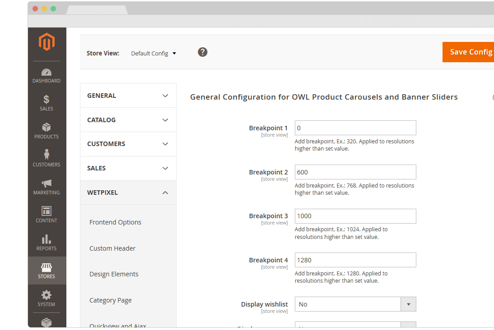
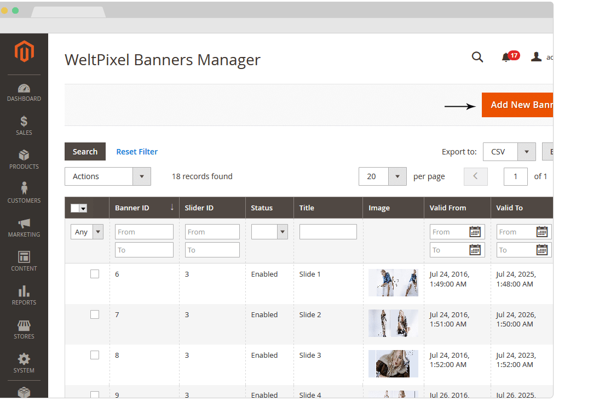
- a. Go to WeltPixel > Banners for Sliders settings, click on Add New Banner button to create a new banner.
-
b.1 configure the banner using the Banner Settings:
- Title - set a title for the banner
- Show Title [Yes / No] - show the banner title in frontend, it will show on the banner
- Description - set a description for current banner
- Status [Enabled / Disabled] - enable or disable current banner
- Slider - assign current banner to a specific Slider. Slider Note: If no slider is created yet, you can ignore this option and assign the banner later from Slider Manager
-
URL
- set the URL where the banner/button should link when clicked on.
URL Note: set the URL without your store baseurl, ex: /women.html;
URL Note 2: If ‘Text Button’ option is filled, URL will be linked to the button instead of banner
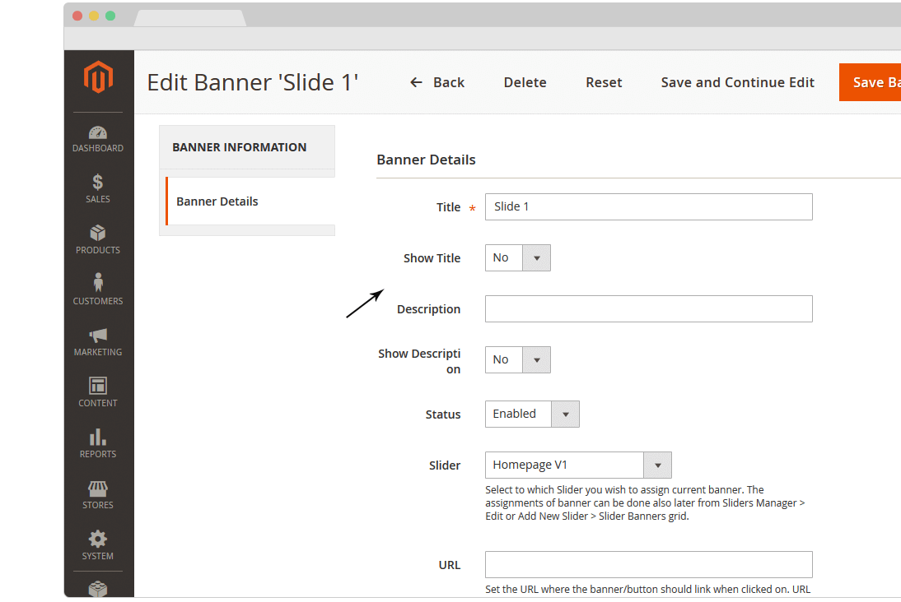
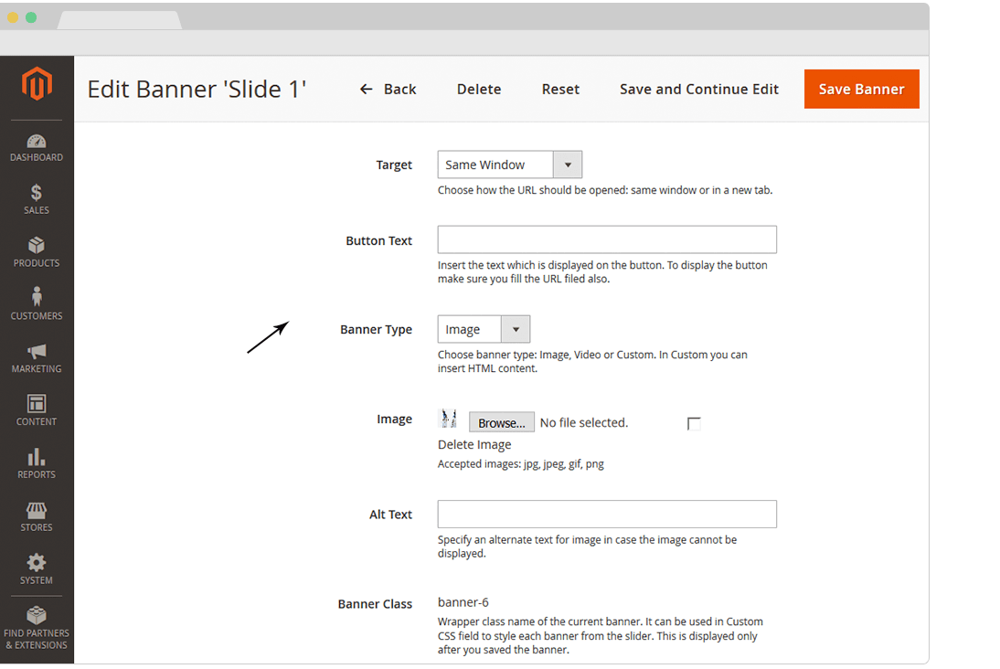
-
..Banner Settings:
- Target [Same Window / New Window Tab] - choose where the banner/button link should open
-
Button Text
- fill any text here and it will be displayed on a button on your banner
Button Text Note: you must set a URL link in order for the button to be displayed on the banner
-
Banner Type [Image / Video / Custom]
- banners can be Images (upload mobile and desktop images), Videos (insert embed iframe) or Custom (insert custom HTML).
Example of banner type: Video
<iframe id="ytplayer" type="text/html" width="1400"height="900" src="https://www.youtube.com/embed/4KEBnFEOOv0?autoplay=1" frameborder="0" allow="autoplay; encripted-media" allowfullscreen> </iframe>
- Create custom banner here - available and applicable only for Banner type ‘Custom’; Here you can create a custom banner different than Image or Video.
- Alt Text- set alternative text if the Banner if an Image; it will show on image hover as tooltip.
- Banner class - here you can view the name of the Wrapper class of the current banner. It can be used in Custom Content field to style each banner from the slider. The name of the class is displayed only after you save the banner.
-
..Banner Settings:
-
Custom HTML Content
- insert your custom HTML Content, applicable for current banner, all banner types.
Example of custom HTML content:
<p class="myclass"> Custom HTML content</p> -
Custom CSS
- insert your custom CSS, applicable for current banner, all banner types.
Note: Use above ‘Banner Class’ option to apply the CSS only for this banner.
Note 2: ‘Banner Class’ option is generated only after the first banner save, if not present, please save the banner and continue to edit.
Example of custom CSS:
.banner-6 .myclass{ font-size: 38px; } - Banner Valid From - start date for banner to be displayed in Slider.
- Banner Valid To - end date for banner to be displayed in Slider.
-
Custom HTML Content
- insert your custom HTML Content, applicable for current banner, all banner types.
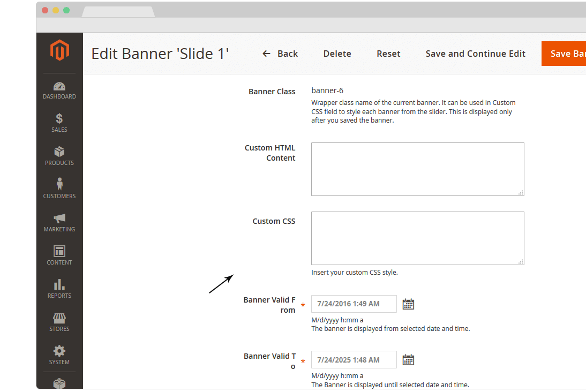
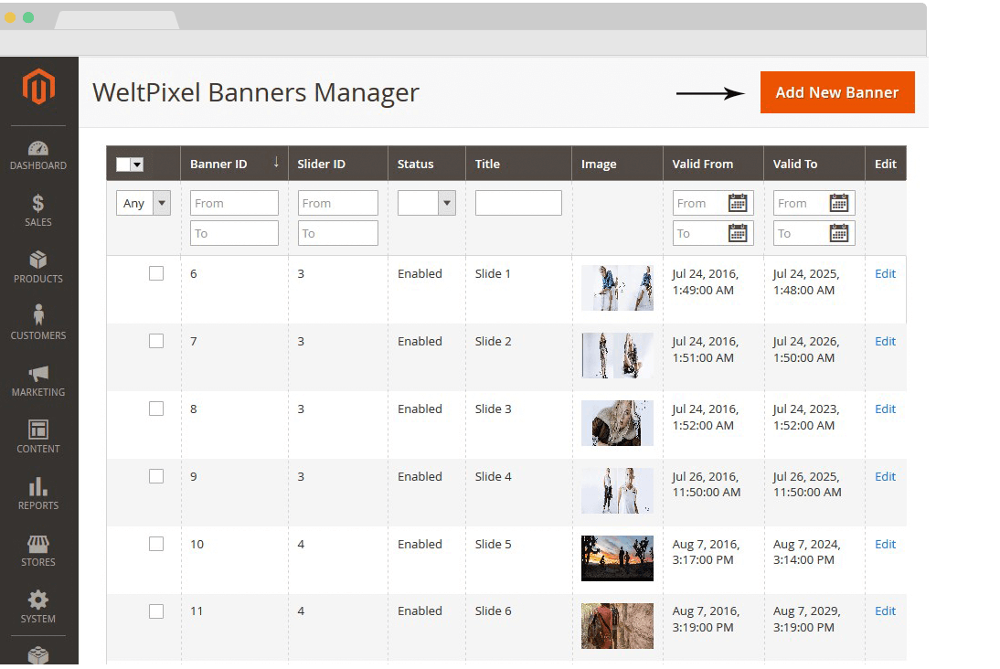
-
C. Save the banner and repeat steps 1.a and 1.b until you have created all necessary banners for your slider.
Step 3: Create and configure your slider
a. Go to WeltPixel > Sliders Manager settings, click on Add New Slider button to create a new slider.
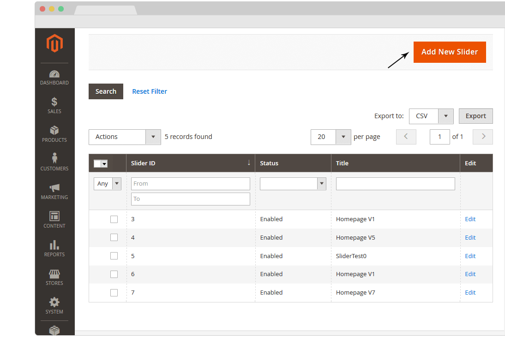
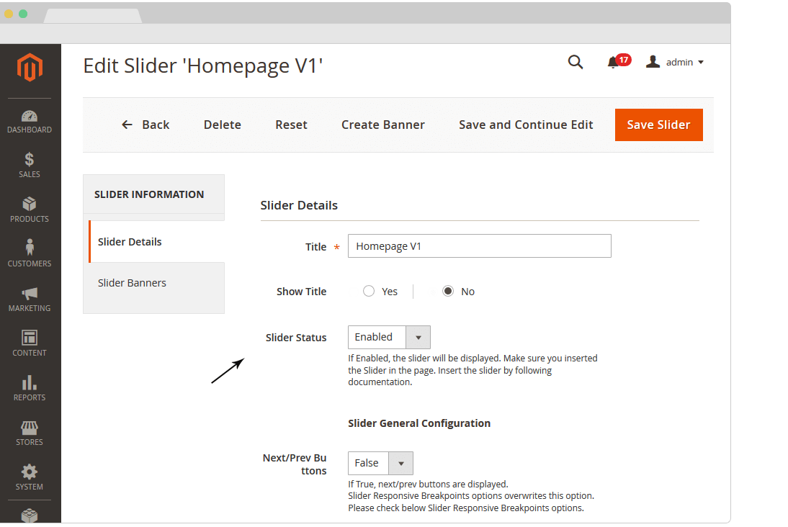
Slider General Configuration
- Title - set the slider Title
- Show Title [Yes / No] - if enabled, the slider title configured above will show in frontend
- Slider Status [Enabled / Disabled] - enable or disable the current slider
-
Next/Prev buttons [True / False]
- show slider navigation buttons
Note: This setting is overwritten by responsive settings
- Dots [True / False] - show navigation dots in bottom area of the slider
- Show Dots for each banner [True / False] - show navigation dots for each banner in the slider
- Thumbs [True / False] - if True, thumbs navigation are displayed
- Banner Transition Effect [Slide / Fade] - slider transition effect
- Next/Prev button Transition Speed - Set the speed for the transition animation when clicking the Next/Prev buttons. Insert value in ms. Write “4000” for a 4 second timeout
- Dots Transition Speed - Set the speed for the transition animation when clicking the Dots. Insert value in ms. Write “4000” for a 4 second timeout
-
Center Item [True / False]
- shows banners on center of the slider and shows neighbour banners
Note: Center option only available for Banner Transition Effect: Slide
-
StagePadding
- shows banners on center of the slider and neighbour banners with specified padding on the sides.
Note: Only available if Transition: Slide and Center:False
- Margin - right margin of banners present in slider (in px), by setting this parameter you define the space between banners present in slider.
-
Items
- number of items/banners visible at the same time on the slider
Note: This setting is overwritten by responsive settings
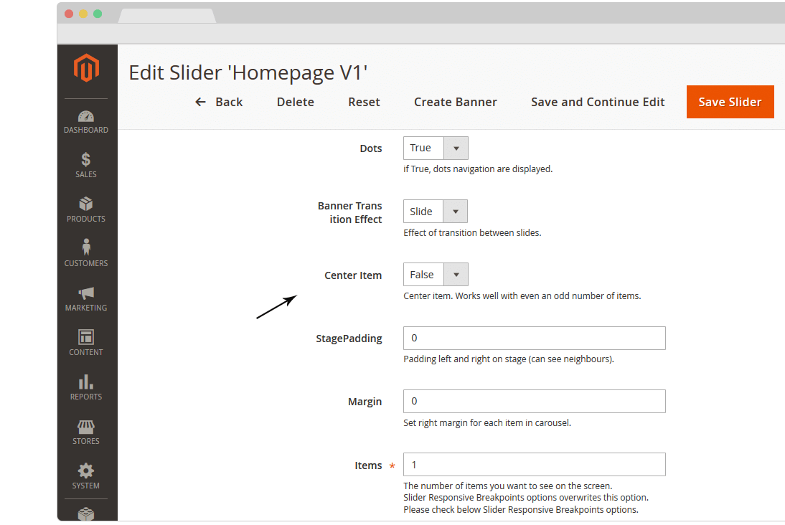
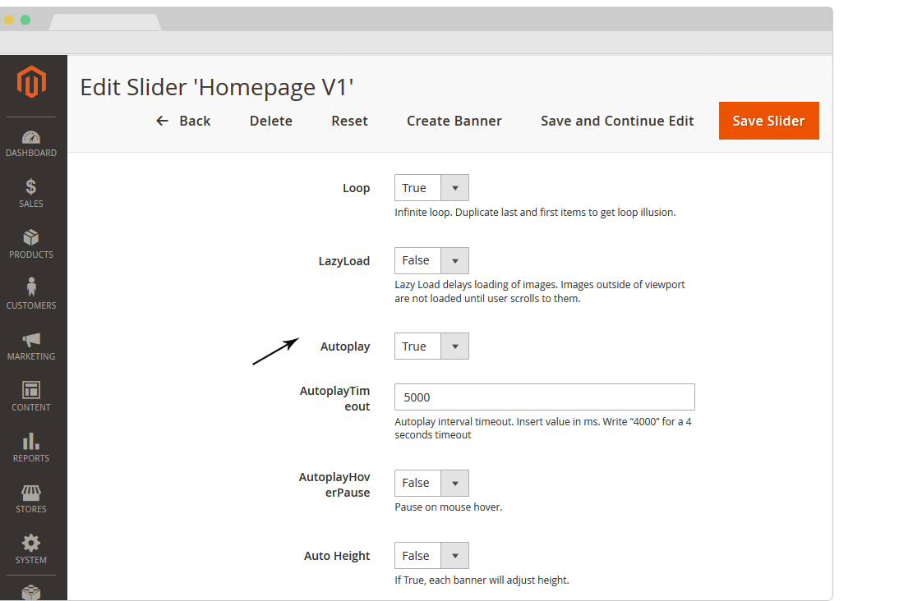
- Loop [True / False] - control slider banner loop
- LazyLoad [True / False] - Lazy Load delays loading of images. Images outside of viewport are not loaded until user scrolls to the items.
- Autoplay [True / False] - activate autoplay for slider items
- Autoplay Timeout - set time between changing banners (in miliseconds, for ex: 4000, for 4 seconds)
- Autoplay Hover Pause [True / False] - set the autoplay to pause on mouse hover
- Auto Height [True / False] - set auto height of the banners in the slider.
- Direction Right To Left [True / False] - if True, each banner will slide from right to left
NOTE: Below responsive settings will overwrite Slider General Configuration
NOTE 2: Breakpoints are already configured in Admin > WeltPixel > OWL Product Carousels > General Configuration for OWL Product Carousels and Banner Sliders.
If necessary you can change default settings with the ones you require in your project.
- Next/Prev Buttons [True / False] - show slider navigation buttons for each breakpoint configured.
- Items - number of items/banners visible on the slider for each breakpoint
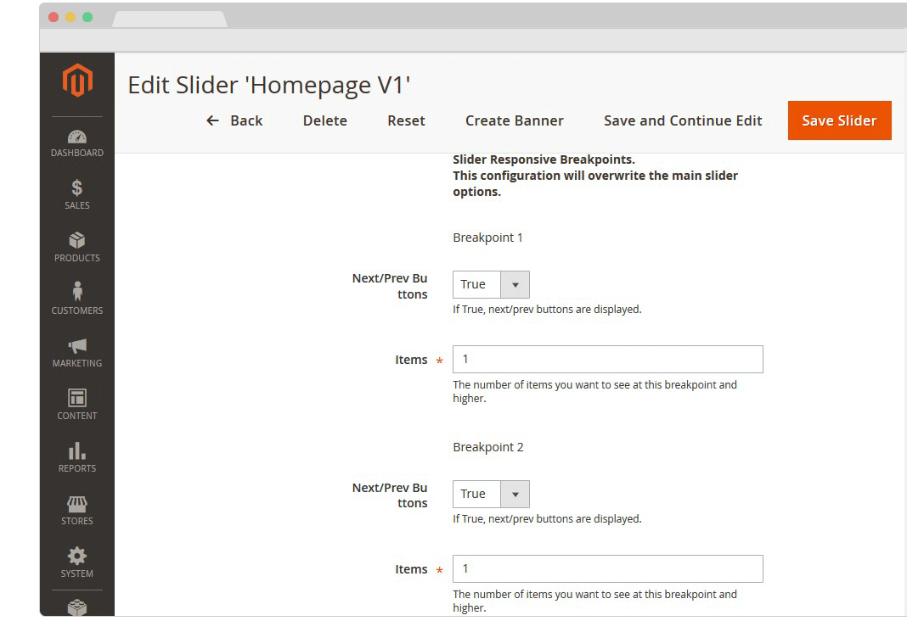
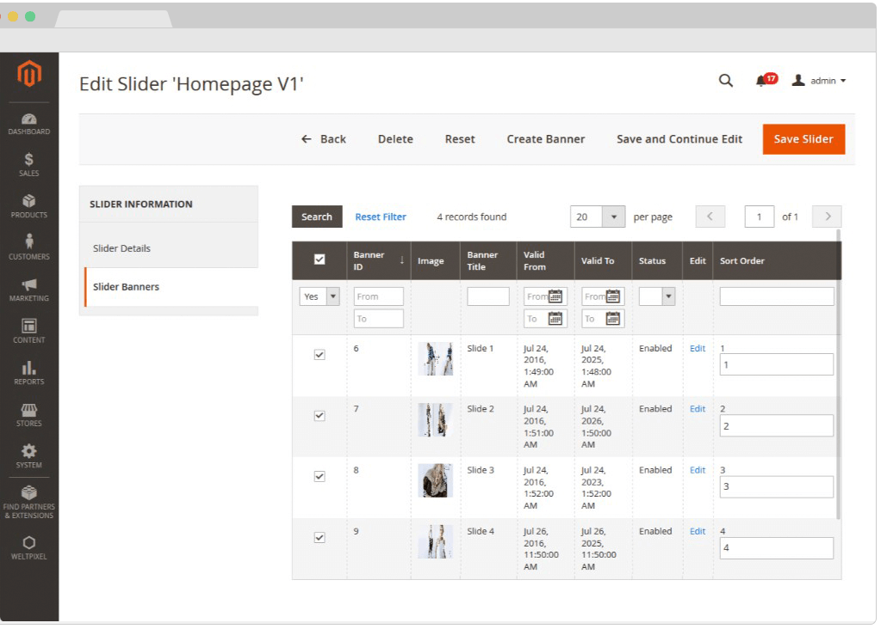
Step 4. Assign Banners to your Slider
- Go to ‘Slider Banners’ tab under ‘Slider Information’
- Click on Reset Filter to display all your banners.
- Choose the banners you want to display in your slider.
- Fill in the banners order in the slider, starting with position 0. If not filled, banners will have by default sort order ‘0’.
- Hit ‘Save Slider’.
Step 5 : How to add slider in magento homepage?
You can insert multiple sliders in your pages. Follow next steps to insert in your pages sliders with images/videos or other custom content, using widgets:
- Go to Admin > Content > Pages and edit the page where you wish to insert the slider
- In Content tab Show Editor click Insert Widget button
- Select WeltPixel - Custom Slider Widget
- In Widget Options choose the Slider you wish to insert in the page
- Click button Insert Widget
- Save the page and check results
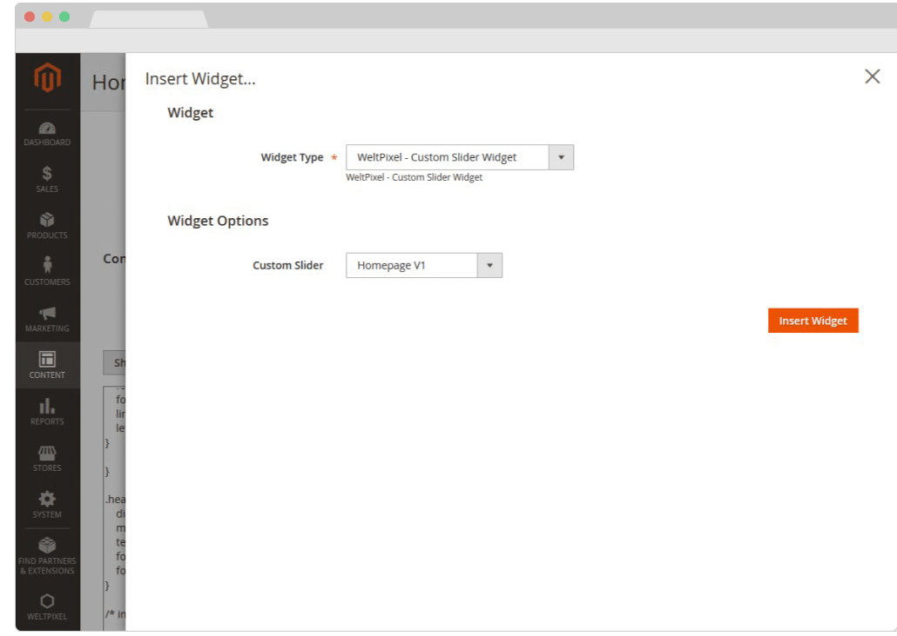

Advanced users can insert sliders pages that do not have an admin editor by inserting a custom code in the corresponding phtml file.
Inserting Slider code in phtml file
-
1. Use the following code to insert the slider in your desired phtml file:
<?php echo $this->getLayout()->createBlock ("\WeltPixel\OwlCarouselSlider\Block\Slider\Custom")->setSliderId('3')->toHtml(); ?> - 2. Replace the sample value ‘3’ with the desired existing slider id from Weltpixel > Sliders Manager admin grid.
HOW TO CREATE A PRODUCT CAROUSEL.
Step 1: Define breakpoints
Go to Admin > WeltPixel > OWL Product Carousels > General Configuration for OWL Product Carousels and Banner Sliders ,and set up to four breakpoints for different screen resolutions.
In next steps you will be able to set item numbers in the carousels for each breakpoint . For example, you can set to display 2 items on mobile screens, 3 items on tablets and 4 items on desktop.
!Note: Options set on breakpoints area will overwrite the general carousel options.
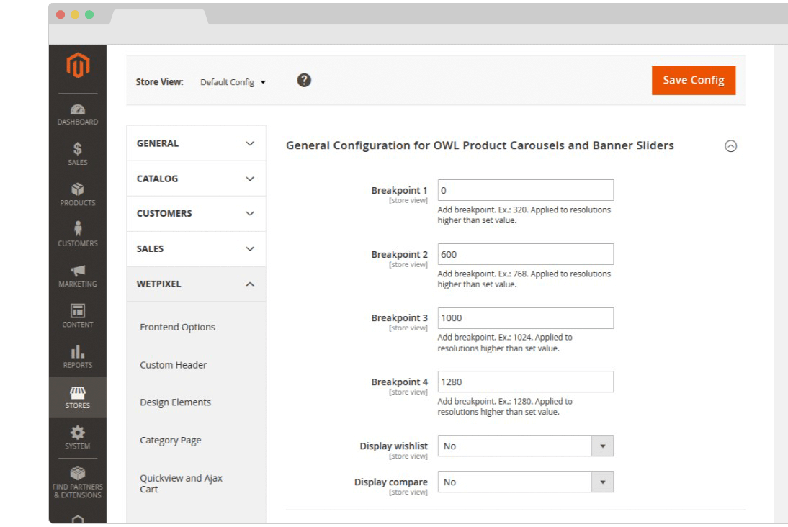
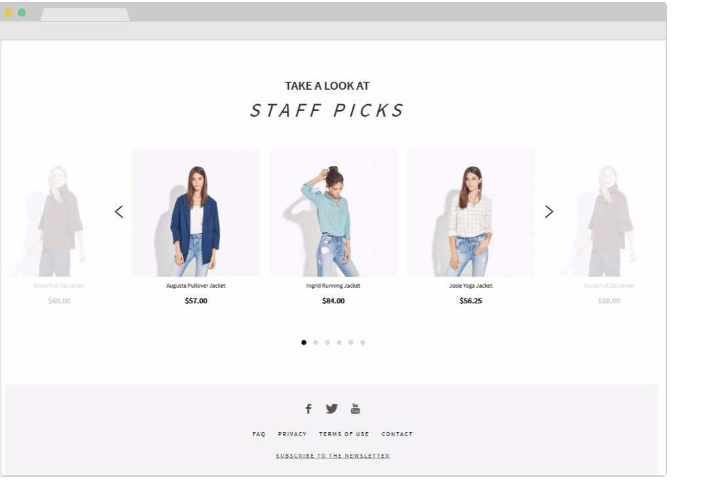
Step 2: Choose the type of product carousel you want to include in your store
You can insert/customize Products Carousels with the following product types:
- New Products
- Sale Products
- Best Sell Products
- Recently Viewed Products
- Related Products
- Upsell Products
- Cross-sell Products
- Custom Category Products (show products from specific category)
- Condition Based Products (show products using conditions combinations)
- Product Reviews Carousel (display product reviews in a carousel)
- New Products Carousel - will be populated with products defined as 'New' in your magento catalog.
- Sale Products Carousel - will be populated with products defined as Sale in your magento catalog.
- Best Sell Products Carousel - will be dynamically populated with best selling products based on your magento admin statistics (make sure magento statistics are activated and products are visible in catalog in order to show up.)
- Recently Viewed Products Carousel - will be dynamically populated with products that users visit in your store while they are logged in
- Related Products Carousel - makes sense only on product page, will be populated with related products defined in magento catalog for each specific product.
- Upsell Products Carousel - makes sense only on product page, will be populated with upsell products defined in magento catalog for each specific product
-
Cross-sell Products Carousel
- makes sense only on product page, will be populated with cross-sell products defined in magento catalog for each specific product
Note If no products are available to populate a carousel then the carousel will not be displayed in frontend
- Custom Category Carousel - carousel will be populated with products from specified category.
- Conditions Based Products Carousel - you can use custom conditions to configure which specific products combination you'd like to display in the carousel
- Product Reviews Carousel - display product reviews in a carousel (requires the Magento 2 CMS Product Reviews extension)
Step 3: Enable and configure the product carousel
Go to Admin > WeltPixel > OWL Product Carousels > select desired product carousel tab and select 'Enable'.
You have a wide range of options available to customize behaviour of the carousels:
-
Enable [Yes / No] - Enable or disable the carousel. If Enabled make sure you have inserted the carousel widget in your page/block.
Note: Related, Cross-sell and Upsell products carousels make sense only on product page, if Enabled the products will be displayed on product page in a carousel instead of default product grid.
- Title [Custom title] - insert text with the title desired, leave the field empty if you do not want the title displayed
- Show Price [Yes / No] - show / hide the product price for products in the carousel
- Show Add To Cart [Yes / No] - show / hide ‘Add to cart’ button for products in the carousel
- Show Wishlist [Yes / No] - show / hide wishlist icon for products in the carousel
- Show Compare [Yes / No] - show / hide Compare icon for products in the carousel
- Sort Order [ Default / Random / Product ID Ascending / Product ID Descending / Price Ascending / Price Descending / Alphabetically Ascenting / Alphabetically Descending ] - choose the sorting mode for the items in the carousel
- Max Items - the total number of products to be loaded in the carousel.
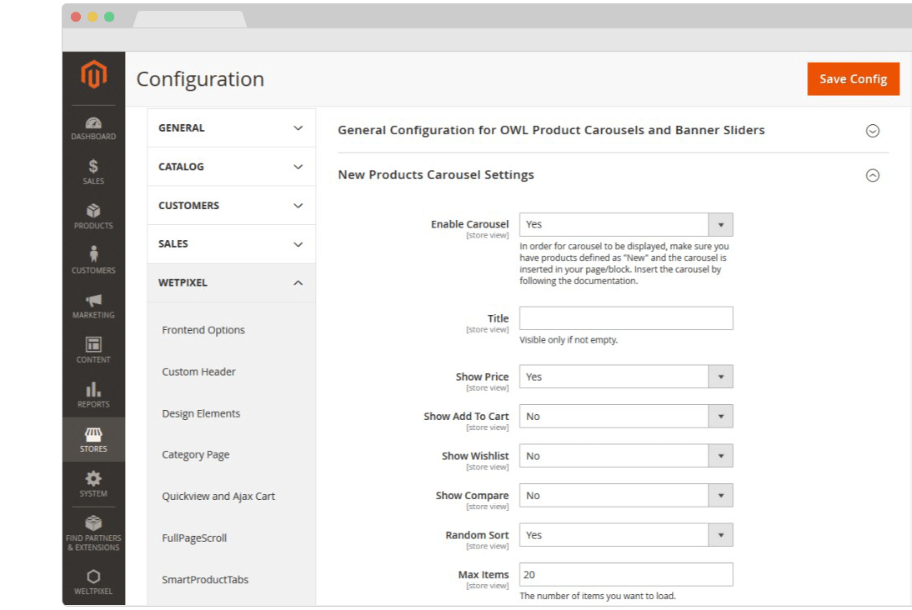
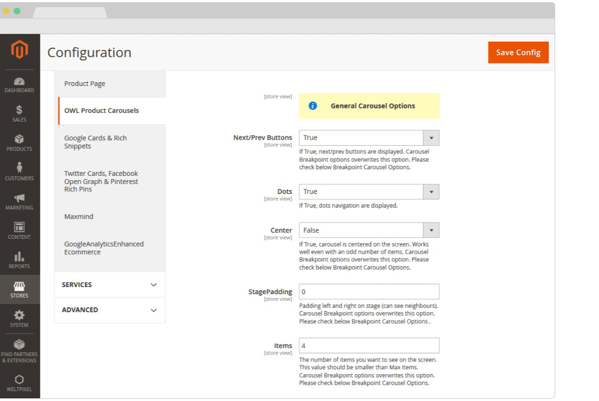
Beside this general options, there are additional options for customizing each type of carousel:
-
Next/Prev Button [True / False]
- If True, Next / Prev buttons are displayed.
Note: This setting is overwritten by responsive settings
- Dots [True / False] - Show / Hide navigation bullets on the bottom of the carousel
- Show Dots for each item [True / False] - if set to True, a dot will be displayed for each visible item in the carousel
-
Center - [True / False]
- shows products on center of the carousel and shows neighbour products on the sides.
Note: This setting is overwritten by responsive settings
-
StagePadding
- shows products on center of the carousel and neighbour products with specified padding on the sides
Note: Only available if Center:False
Note 2: This setting is overwritten by responsive settings
-
Items
- number of items/banners visible at the same time on the slider. This value should be smaller than Max Items.
Note: This setting is overwritten by responsive settings
- Loop [True / False] - activate/deactivate loop through items.
- Margin - Set right side margin for each item in carousel. Example: for a margin of 30px enter 30 in the field.
- LazyLoad [True / False] - Lazy Load delays loading of images. Images outside of viewport are not loaded until user scrolls to them.
- Autoplay [True / False] - autoplay the carousel
- AutoplayTimeout - set time between changing products (in miliseconds, for ex: 4000, for 4 seconds))
- AutoplayHoverPause [True / False] - set the the autoplay to pause on mouse hover
- Next/Prev button Transition Speed - Set the speed for the transition animation when clicking the Next/Prev buttons. Insert value in ms. Write “4000” for a 4 second timeout
- Dots Transition Speed - Set the speed for the transition animation when clicking the Dots. Insert value in ms. Write “4000” for a 4 second timeout
- Direction Right To Left [ True / False ] - If True, each item will slide from right to left
- Prev/Next buttons design [ Carousel Sides / Under Carousel ] - choose the display area for the Prev/Next buttons
- Prev/Next button label - choose a label for the Prev/Next buttons
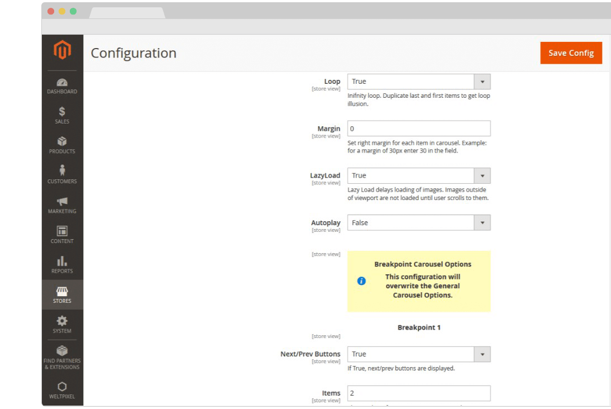
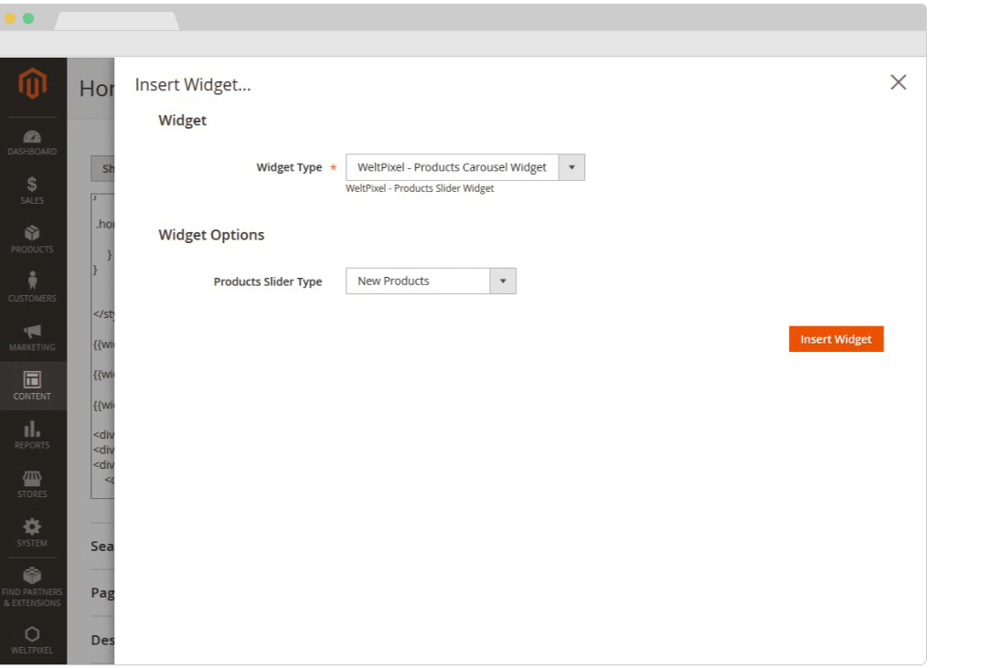
Step 4: How to add magento featured products slider on homepage?
For New, Sale, Best Sell, Recently Visited Product Carousels:
- Go to Admin > Content > Pages and edit the page where you wish to insert the carousel
- In Content tab Show Editor click 'Insert Widget' button
- Select 'WeltPixel - Product Carousels Widget'
- In Widget Options choose the carousel you wish to insert
- Hit 'Insert Widget'
- Save the page and check results
For Custom Category Product Carousels:
- Go to Admin > Content > Pages and edit the page where you wish to insert the carousel
- In Content tab Show Editor click 'Insert Widget' button
- Select 'WeltPixel - Custom Category Product Carousel'
- In Widget Options select the category. The products from selected category will be added in this carousel.
- Hit 'Insert Widget'
- Save the page and check results.
For Related, Upsell and Cross-sell Product Carousels
-
1. All you have to do is to Enable this types of carousels and the products will be displayed in a carousel instead of default product grid. You can do this here: WeltPixel > OWL Products Carousel -> Related, Up-sell, Cross-sell Products Carousel -> Enable
-
2. For Related Products to be displayed, make sure you have defined Related products in your catalog and check the bottom of product detail page.
-
3. For Up-sell Products to be displayed, make sure you have defined Up-sell products in your catalog and check the bottom of product detail page the section “You may also be interested in the following product(s)”.
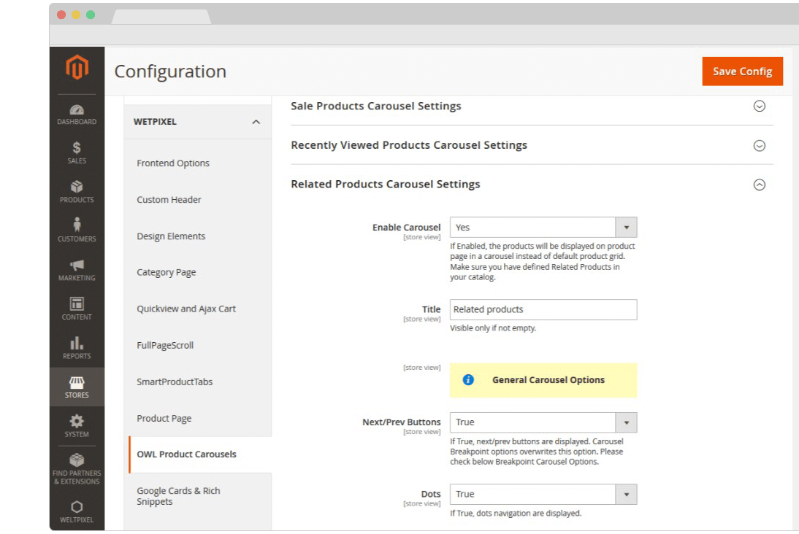
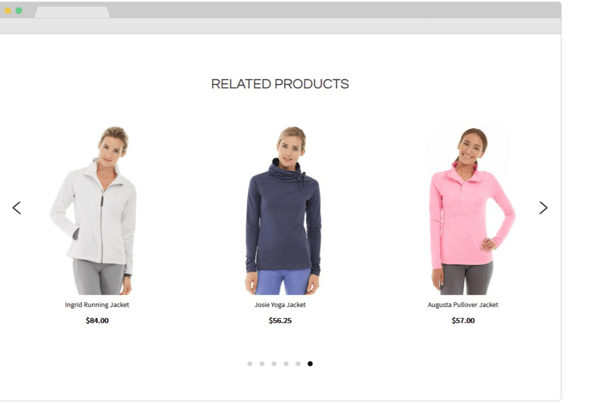
My carousel is not showing up, help !?
In order for New and Sale Product Carousel to be displayed, make sure you inserted the carousel in your page/block and there are some products defined as "New" respectively “Sale” in your catalog..
In order for Best Sell Product Carousel to be displayed make sure you inserted the carousel in your page/block and there are some orders in your store, best selling products are determined based on magento statistics. Make sure Magento statistics are activated and best selling products show up in your magento admin statistics. Make sure your products are visible in Catalog in order to show up in this carousel - simple products marked as not visible individually, will not show up in this carousel only if product visibility is enabled.)
In order for Recently Viewed Carousel to be displayed, make sure you inserted the carousel in your page/block. Users must be logged in and visited at least one product in order for this carousel to be populated.
In order for Related Products Carousels, Up-sell Products Carousels to be displayed on product page make sure the carousels are Enabled and the product you are checking have defined at least one related or up-sell product in magento catalog.
For Cross-sell Products to be displayed, make sure you have defined Cross-sell products in your catalog, add that product to cart and check the shopping cart page.
For Custom Category Carousel to be displayed, make sure you entered the correct category and the category contains at least one product. (option available only in Pro version of this extension)
Change Log.
What’s new in v.1.11.1 - April 25, 2021
- Fixed a bug that caused all banners within a Slider to disappear unless there was an Image type banner present in the Slider.
- Fixed an incorrect licensing message on B2B Magento Enterprise instances which would display when an invalid license was entered.
- Confirmed compatibility with the latest Magento 2.4.4 and 2.3.7-p3 versions as well as PHP 8.1.
What’s new in v.1.10.17 - October 22, 2021
- New Feature: Added a new sorting option for Recently Viewed Product Carousels that allow for sorting items in the order they were seen.
- New Feature: Added new options to control banner transtion speed when using the AutoPlay functionality.
- New Feature: Added options to control radius for Banner Slider Next/Prev buttons.
- Fixed a bug that caused the Next/Prev text to show on Next/Prev carousel and banner buttons.
- Confirmed compatibility with the latest Magento 2.4.3-p1 and 2.3.7-p2 versions.
What’s new in v.1.10.15 - August 31, 2021
- Fixed an error that occurred when inserting a Sale Carousel into a CMS Page when the Magento Flat Catalog was enabled.
- Added minor CSS adjustments to Carousel and Banner arrows.
- Confirmed compatibility with the newly released Magento 2.4.3, 2.4.2-p2 and 2.3.7-p1 versions.
- Added .localhost as an accepted domain termination for the licensing process.
What’s new in v.1.10.11 - July 7, 2021
- Added improvments to the WeltPixel Developer Magento Admin section. Latest Cron Jobs now lists the last 100 executed Cron Jobs.
What’s new in v.1.10.9 - May 18, 2021
- Fixed a bug that, in some cases, prevented video and custom banner types from functioning due to a code dependency on mobile image.
- Fixed an error that was thrown on the frontend when the default Magento Sale Attribute did not exist on the Magento instance.
- Fixed an issue that prevented Banner statuses from being updated from the Magento Admin grid.
- Added minor CSS adjustments to Banners without the autoheight functionality enabled.
- Confirmed compatibility with the newly released Magento 2.3.7 and 2.4.2-p1 versions.
What’s new in v.1.10.7 - March 26, 2021
- New feature: Added an integration with our Product Labels module which now allows for displaying Product Labels on Product Carousels, both via widgets and Related/Up-Sell Carousels on Product Pages. Requires the WeltPixel Product Labels extension.
- Added additional verifications to prevent errors when certain product attributes were missing from the Magento instance.
- Fixed a bug that prevented scrolling on mobile when touching a Product Carousel or Banner Slider.
- Fixed a small misalignment of the old price discounted price in Product Carousels.
- Added minor CSS adjutsments to the Next/Prev arrows functionality.
- Fixed a minor height calculation issue for Banner Sliders.
- Removed an unused library for improved performance.
- Excluded Magento 2.0.x - 2.2.x from new features and fixes starting with this release.
- Adjusted WeltPixel Developer section comments.
What’s new in v.1.10.5 - February 12, 2021
- New Feature: Added additional Sorting Options for items in Product Carousels. Options include: Product ID Ascending / Product ID Descending / Price Ascending / Price Descending / Alphabetically Ascending / Alphabetically Descending.
- New Feature: Added new Design Options for Next/Prev buttons. This includes position options for Next/Prev Arrows, options for Dots Navigation, as well as allowing you to set custom transition speeds for both designs.
- Added new Prev/Next design options and transition speed options when using the CMS Reviews Widget with the OWL Carousel extension (Requires the CMS Product Reviews Widget extension).
- New Feature: Added a new Carousel Type based on user-defined conditions. This provides more control over which products are displayed in the widget.
- Fixed an issue that prevented products with a Special Price from being included in Sale Product Carousels.
- Fixed an issue that resulted in browser error being thrown on mobile upon scrolling between products in a Carousel.
- Confirmed compatibility with the newly released Magento 2.4.2 version.
- Added additional backend versioning verifications.
- Backend module code optimizations.
What’s new in v.1.10.1 - October 22, 2020
- Fixed a bug that caused an inability to save Banners from within the Sliders Manager section in the Magento Admin.
- Fixed an issue related to the Bestsellers Product Carousel whereby changing the period for items to be displayed did not work.
- Confirmed compatibility with the newly released Magento 2.4.1 version.
What’s new in v.1.10.0 - August 10, 2020
- Fixed a small issue that caused Product Carousels to shift by one item upon page load. This was only a problem for the Best Sell Product Carousel.
- Confirmed compatibility with the newly released Magento 2.4.0 version.
What’s new in v.1.9.8 - July 6, 2020
- Fixed an issue which, on certain configurations caused Add to Carts from product carousels to be redirected to a 404 page.
- Added an integration with the Product Reviews Widget extension to allow for reviews to be displayed in a carousel.
- Fixed a bug that caused banners to be deselected in the banner grid when changing the Sort Order.
- Whitelisted domain for Content Security Policies introduced in Magento 2.3.5.
What’s new in v.1.9.7 - May 7, 2020
- Fixed a display issue present only on the Internet Explorer and Edge browsers.
- Confirmed compatibility with Magento 2.3.5.
- Implemented small Backend performance optimizations.
- Added nxcli.net (Nexcess temporary URL) as a valid domain in the licensing process.
- Added an option in the Developer section to allow for switching Magento's CSP between "report-only" and "restrict".
What’s new in v.1.9.6 - April 9, 2020
- Fixed a bug that caused images to disappear from Product Carousels when Lazy Load was enabled and Loop was disabled via Carousel options.
- Fixed an issue whereby the Recently Viewed Products carousel was not working.
- Addressed a few browser warnings related to jQuery UI.
- Fixed a Backend issue on Magento Commerce whereby the Category Schedule functionality was not working properly.
What’s new in v.1.9.5 - March 10, 2020
- Added backend Google reCaptcha compatibility for Magento 2.3.x
What’s new in v.1.9.4 - February 5, 2020
- Removed obsolete export functionality from the Banner Slider Magento Admin settings.
- Code enhancements for increased security. Changed User Group info collection method.
- Confirmed compatibility for Magento 2.3.4.
What’s new in v.1.9.2 - November 27, 2019
- Optimized compatibility with Full Page Cache and Varnish Cache for the Schedule Banner functionality.
- Fixed an issue which whereby "Next" and "Prev" text was displayed on Banner next / prev buttons on the Chrome browser. This issue was caused by a recent Google Chrome update.
- Fixed an issue whereby the Select All button did not work on Related Product carousels.
- Added new translations.
- Added Magento and PHP version in the WeltPixel Developer section.
What’s new in v.1.9.1 - October 16, 2019
- Fixed an issue which caused the Random Sort option to malfunction.
- Removed obsolte isScopePrivate parameter to ensure best practice.
- Fixed an issue which caused certain carousel templates to load on the frontend even when disabled.
- Fixed an error that was thrown in the Magento Admin when disabling the Best Sell Carousel.
- Added comments in the Admin Section for better explaining the Add to Wishlist and Add to Compare options.
- Added the possibility to show review stars on Product Carousels.
- Fixed a caching issue that occurred when a carousel was inserted both on the Home Page and on the Product Page.
- CSS adjustments.
- Confirmed compatibility with the latst Magento 2.3.3 version.
- Included the WeSupply Toolbox integration extension - Proactive Notifications Email & SMS, Returns & RMA, Store Locator, Delivery Date Estimate, Logistics Analytics, NPS & CSAT score. Get Free on-boarding and launch within 24 hours.
What’s new in v.1.9.0 - July 18, 2019
- Fixed a bug related to a missing img tag when the Lazy Load option was used with a Related Products carousel. The bug affected the Free version only.
- Fixed an issue which caused the Related Products carousel title to display even if the carousel was disabled.
- Fixed a bug which caused Carousel display issues when inserted as a widget into certain page sections.
- Confirmed compatibility with Magento 2.3.2.
- Added HTTPS endpoint for licensing process.
What’s new in v.1.8.5 - June 7, 2019
- Fixed an issue which caused the Loop functionality not to work when Lazy Loading was applied to product carousels.
- Fixed a bug that caused product images to disappear on mobile when they had Listing Hover Images applied.
- Fixed a duplicate id error that occured when using a Best Sell Carousel.
- Adjusted Next/Prev button arrow positioning on all resolutions.
- -Corrected a spelling error in the Recently Viewed Products carousel template.
- Small CSS adjustments.
- Small performance improvements.
What’s new in v.1.8.4 - April 25, 2019
- Added PHP version in the WeltPixel Developer Section.
What’s new in v.1.8.3 - April 3rd, 2019
- Added a new functionality. A thumb image can now be added to each banner and can be used to switch between them. The functionality is similar to Dots, but now images can be added instead. Available only in the PRO version of the module.
- Fixed an issue related to product page caching when extension was enabled.
- CSS adjustments.
- Confirmed compatibility for Magento 2.3.1.
What’s new in v.1.8.2 - January 24, 2019
- Added the option to upload a new loader image for banners and carousels directly from the Magento Admin.
- Fixed placeholder for video on owl banner/slider.
- Fixed a bug in which adding a product to the cart directly from the carousel redirected to a blank page.
- Custom CSS code added to the banners is now applied all the time, not only when Custom HTML content also added from the admin.
- Code optimization, removed duplicated code.
- Helpcenter adjustment, removed Zendesk iframe and added a simple link to our Support Center in order to avoid any potential conflicts with other admin js added by 3rd party extensions.
- Fix for multiple rewritten ImageFactory classes, rewrite check validity, rewrite checks optimizations.
What’s new in v.1.8.0 - December 8, 2018
- Added Slide By functionality (PRO Version only) - Single or multiple item slide on Carousel scroll.
- Fixed a bug where the 'Select All' action in Magento Admin was not applying to Banner Slider grid in Admin.
- Compatibility adjustments for Magento 2.1.16/2.2.7/2.3.0.
- PHP 7.2 compatibility added.
- As Magento 2.3 comes with major core changes, we have provided a different set of files in order to achieve the best performance on each version.
What’s new in v.1.7.5 - October 24, 2018
- Optimization - use the mobile image as fallback if no desktop image is used.
- Fixed bug - now you can disable slider from slider grid in admin panel.
- Added cache lifetime parameter to widget in order to avoid out of stock products showing up in carousel - re-add widget to page to receive this fix - it is not enough to update the extension.
- Added detailed error messages for invalid licenses for an easier identification of the cause.
- License improvements, added *.magento.cloud as a valid test domain for Enterprise Cloud environments. Now both ‘magentosite.cloud’ and ‘magneto.cloud’ can be used for testing purpose with the production domain license.
What’s new in v.1.7.4 - September 25, 2018
- Fixed carousel and sliders arrows (design) for IE11 and Edge browsers.
- Admin menu styling to fit screen size 1366px.
- Fix for production mode with merged JS - missing color pallet display now fixed.
What’s new in v.1.7.3 - August 23, 2018
- New feature: Banners are now reusable in multiple Sliders (Pro feature).
- New feature: OWL Best sell carousel - added option to select period for best sell statistics day, week, month, year, all time. (Pro feature).
- Fixed banner preview in Magento admin, keep original ratio (both Free and Pro).
- License improvements, adding *.magento.cloud as a valid test domain.
What’s new in v.1.7.2 - August 2, 2018
- Fixed currency cache issue.
- Mobile optimizations.
- Best seller carousel max items limit now working.
- Fixed admin random logout issue.
- Licensing improvements, allowing 3 letter domain as valid domain.
What’s new in v.1.7.1 - July 12, 2018
- Compatibility with Magento 2.2.5 both Open Source & Commerce Cloud B2B.
- Added domain.test & [any_subdomain].domain.test to the list of valid urls for staging/development environments. Added domain validation with port number included for licensing purpose.
- Added licensing compatibility with Magento B2B.
What’s new in v.1.7.0 - July 5, 2018
- Recently viewed widget optimization, widget loaded even if not added to homepage.
- Optimized image loading for banners, mobile image not showed anymore in desktop view.
- Added option to enable/disable WeltPixel admin notifications.
- Show store and server related information under debugging tab: Magento Mode, Magento Edition, Server User, Magento Installation Path, Current server time, Latest cron jobs.
- Added licensing, license key needs to be generated under weltpixel.com account for purchased product, based on domain name and added under your magento installation.
What’s new in v.1.6.4 - May 16, 2018
- Compatibility with Magento 2.2.4, logger broken reference fix, changed to rewrite from plugin.
- Recently viewed products now showing in carousels when full page cache is enabled.
- Recently viewed products now showing in carousels even for guest users.
What’s new in version 1.6.3 - April 10, 2018
- OWL Carousel and Slider Pro: Configurable products are now included in OWL Best Sell Carousel.
What’s new in version 1.6.2 - March 23, 2018
- OWL Carousel and Slider Pro: Banner link click configured in admin now available also on banner title and description.
- Design and shadow bug fix for cross sell products to match the rest of the carousels..
- Center Add to cart, wishlist, compare buttons on carousels
- Redesign for slider and carousel left/right arrows.
What’s new in version 1.6.0 - March 1st, 2018
- Change image resolution in carousels from 240x300px to 480x600px to avoid image quality loss.
What’s new in version 1.5.8 - January 12, 2018
- Added version control for installed WeltPixel modules, including latest version check.
- Fixed visibility of last carousel item if Stage Padding is grater than 0.
- Fixed Stage Padding save issues.
- Fixed errors for null config values.
- OWL carousels, fix for image size generation.
- Fixed configurable products swatch change and hover image switch.
- Removed duplicated general carousel config options, now available only on breakpoint level in order to avoid confusion and improve usability.
What’s new in version 1.5.7 - December 14, 2017
- Added Support Center functionality in Magento Admin.
- Added Debugger functionality, checks for rewrites and points potential issues.
- Fix year format of date picker field.
- Remove 4px banner margin.
- Fix for banners, now centered on resolutions smaller than 768px.
- Unused classes cleanup.
What’s new in version 1.5.5 - October 20, 2017
- Added a smooth first load of OWL PRO Slider, removed the Next/Prev slider effect.
- Fix for hover image, Prev / Next glitch.
- Fix for lazy load option enabled.
- Lazy load OWL functionality fixed for custom and product sliders.
- Lazy Load implementation for related, upsell, crossel items.
- Lazy loading OWL bug when lazy load on and items fewer than used items.
-
Lazy load image attribute added only if carousel enabled.
What’s new in version 1.5.3 - September 20, 2017
- Added Hover Image functionality on listing pages with possibility to select the second image from product image settings. (available in PRO version).
- Added mobile image & desktop image functionality for banners with frontend cache separation (available in PRO version).
- Added Custom Category Carousels, show products from specific category (available in PRO version).
- Added Google Analytics banner tracking per store-view instead of global.
- Design adjustments for dots.
- Cache for product blocks added.
- Next/Prev button admin saving fix.
- Auto height admin saving fix.
- Fixed product page carousels box shadow.
- Compatibility adjustments for Magento Enterprise 2.1.8.
-
Function param doc fixes.
What’s new in version 1.3.4 - May 16, 2017
- Added translations files under /i18n/en_US.csv.
- Fixed native bug of OWL carousel, prev / next buttons visibility control on breakpoints.
- Removed Banner store view selector, not relevant as banner is not configurable per store view.
-
Fixed Banner Slider hardcoded date format, date now working in all international formats.
What’s new in version 1.3.3 - April 05, 2017
-
Fixed OWL carousel loading issues, some times when images were too big slider was not loading properly.
What’s new in version 1.3.2 - March 20, 2017
- Added possibility to track Banner Click-Through-Rate (CTR) and revenue generated by the banner.
- Fixed transparency issue - slides now visible on Safari browser, OWL Banner Slider
- Fixed mobile navigation icons
- Fixed prev / next navigation out of screen
- Fixed carousel product picture padding when used in CMS pages
What’s new in version 1.3.1 - 02/21/2017
- New option - control Dots visibility of product carousels per each configured breakpoint
- Fixed - recently viewed products collecion fix for product carousel
- Fixed - not rendering head title html if no title set in backend
What’s new in version 1.2.2 - 01/23/2017
- Refactoring admin option names, admin hints for a better user experience
- New documentation, html format, detailed with different structure
- Small css adjustments and fixes
What’s new in version 1.1.0 - 11/22/2016
- Renamed from “sell” to “Sale” products
- Fix for proper product base url fetching
- Image link bug fix
- Option added for display to wishlist and compare
- Time changed for setTimeout
- Bug fixed to arrows position and ajaxComplete for loading
- Title tag changed in h3
- Loader fix
- Dots and arrows fix
What’s new in version 1.0.4 - 10/12/2016
- Options to display wishlist and compare on product page slide
- Fixed loader for banner slider and product page carousel, in some cases loader kept loading
- Frontend layout fixes
- Fixed product case url fetching
- Default config changes, enable product sliders by default
- Typo changes
What’s new in version 1.0.3 - 08/24/2016
- Adjusted default settings for banner sliders
- Added validation for fields that caused confusion when setting up sliders
- Bug fixed: image lost when saving the banner
- Added info comments on admin options
- New design feature: apply a different design for each banner using custom CSS / banner
- Reorganised admin options for a more intuitive usability
What’s new in version 1.0.2 - 06/05/2016
- Fix for slider, in some circumstances the images were not loaded
- Fix for loader which sometimes loaded infinitely
- Fix for slider, when slider was clicked the homepage refreshed, even if no link was set.